Recent Text-to-Image (T2I) generation models such as Stable Diffusion and Imagen have made significant progress in generating high-resolution images based on text descriptions. However, many generated images still suffer from issues such as artifacts/implausibility, misalignment with text descriptions, and low aesthetic quality. Inspired by the success of Reinforcement Learning with Human Feedback (RLHF) for large language models, prior works collected human-provided scores as feedback on generated images and trained a reward model to improve the T2I generation. In this paper, we enrich the feedback signal by (i) marking image regions that are implausible or misaligned with the text, and (ii) annotating which words in the text prompt are misrepresented or missing on the image. We collect such rich human feedback on 18K generated images (RichHF-18K) and train a multimodal transformer to predict the rich feedback automatically. We show that the predicted rich human feedback can be leveraged to improve image generation, for example, by selecting high-quality training data to finetune and improve the generative models, or by creating masks with predicted heatmaps to inpaint the problematic regions. Notably, the improvements generalize to models (Muse) beyond those used to generate the images on which human feedback data were collected (Stable Diffusion variants). The RichHF-18K data set will be released in our GitHub repository: https://github.com/google-research/google-research/tree/master/richhf_18k.
Text-to-image (T2I) generation models [43, 12, 57, 60, 42, 59, 17] are rapidly becoming a key to content creation in various domains, including entertainment, art, design, and advertising, and are also being generalized to image editing [45, 4, 28, 51], video generation [23, 36, 54], among many other applications. Despite significant recent advances, the outputs still usually suffer from issues such as artifacts/implausibility, misalignment with text descriptions, and low aesthetic quality [55, 31, 53]. For example, in the Pick-a-Pic dataset [31], which mainly consists of images generated by Stable Diffusion model variants , many images (e.g. Fig. 1) contain distorted human/animal bodies (e.g. human hands with more than five fingers), distorted objects and implausibility issues such as a floating lamp. Our human evaluation experiments find that only 10% of the generated images in the dataset are free of artifacts and implausibility. Similarly, text-image misalignment issues are common too, e.g., the prompt is “a man jumping into a river” but the generated image shows the man standing.
Existing automatic evaluation metrics for generated images, however, including the well-known IS [44] and FID [20], are computed over distributions of images and may not reflect nuances in individual images. Recent research has collected human preferences/ratings to evaluate the quality of generated images and trained evaluation models to predict those ratings [55, 31, 53], notably ImageReward [55] or Pick-a-Pic [31]. While more focused, these metrics still summarize the quality of one image into a single numeric score. In terms of prompt-image alignment, there are also seminal single-score metrics such as CLIPScore [19] and more recent question generation and answering pipelines [25, 58, 10, 8]. While more calibrated and explainable, these are expensive and complex models that still do not localize the regions of misalignment in the image.
In this paper, we propose a dataset and a model of fine-grained multi-faceted evaluations that are interpretable and attributable (e.g., to regions with artifacts/implausibility or image-text misalignments), which provide a much richer understanding of the image quality than single scalar scores. As a first contribution, we collect a dataset of Rich Human Feedback on 18K images (RichHF-18K), which contains (i) point annotations on the image that highlight regions of implausibility/artifacts, and text-image misalignment; (ii) labeled words on the prompts specifying the missing or misrepresented concepts in the generated image; and (iii) four types of fine-grained scores for image plausibility, text-image alignment, aesthetics, and overall rating. Equipped with RichHF-18K, we design a multimodal transformer model, which we coin as Rich Automatic Human Feedback (RAHF) to learn to predict these rich human annotations on generated images and their associated text prompt. Our model can therefore predict implausibility and misalignment regions, misaligned keywords, as well as fine-grained scores. This not only provides reliable ratings, but also more detailed and explainable insights about the quality of the generated images. To the best of our knowledge, this is the first rich feedback dataset and model for state-of-the-art text-to-image generation models, providing an automatic and explainable pipeline to evaluate T2I generation.
The main contributions of this paper are summarized below:
The first Rich Human Feedback dataset (RichHF-18K) on generated images (consisting of fine-grained scores, implausibility(artifact)/misalignment image regions, and misalignment keywords), on 18K Pick-a-Pic images.
A multimodal Transformer model (RAHF) to predict rich feedback on generated images, which we show to be highly correlated with the human annotations on a test set.
We further demonstrate the usefulness of the predicted rich human feedback by RAHF to improve image generation: (i) by using the predicted heatmaps as masks to inpaint problematic image regions and (ii) by using the predicted scores to help finetune image generation models (like Muse [6]), e.g., via selecting/filtering finetuning data, or as reward guidance. We show that in both cases we obtain better images than with the original model.
The improvement on the Muse model, which differs from the models that generated the images in our training set, shows the good generalization capacity of our RAHF model.
Text-to-image (T2I) generation models have evolved and iterated through several popular model architectures in the deep learning era. An early work is the Generative Adversarial Network (GAN) [16, 3, 27], which trains a generator for image generation and a discriminator to distinguish between real and generated images, in parallel (also see [61, 56, 63, 39, 33, 48] among others). Another category of generation models develops from variational auto-encoders (VAEs) [30, 21, 49], which optimize evidence lower bound (ELBO) for the likelihood of the image data.
Most recently, Diffusion Models (DMs) [47, 22, 37, 42] have emerged as the state-of-the-art (SOTA) for Image Generation [13]. DMs are trained to generate images progressively from random noise, with the ability to capture more diversity than GANs and achieve good sample quality [13]. Latent Diffusion Models [42] are a further refinement that performs the diffusion process in a compact latent space for more efficiency.
There has been much recent work on evaluation of text-to-image models along many dimensions [55, 31, 26, 53, 52, 38, 32, 9]. Xu et al. [55] collect a human preference dataset by requesting users to rank multiple images and rate them according to their quality. They trained a reward model ImageReward for human preference learning, and proposed Reward Feedback Learning (ReFL) for tuning diffusion models with the ImageReward model. Kirstain et al. [31] built a web application to collect human preferences by asking users to choose the better image from a pair of generated images, resulting in a dataset called Pick-a-Pic with more than 500K examples generated by T2I models such as Stable Diffusion 2.1, Dreamlike Photoreal 2.05, and Stable Diffusion XL variants. They leveraged the human preference dataset to train a CLIP-based [40] scoring function, called PickScore, to predict human preferences. Huang et al. [26] proposed a benchmark called T2I-CompBench for evaluating text-to-image models, which consists of 6,000 text prompts describing attribute binding, object relationships, and complex compositions. They utilized multiple pretrained vision-language models such as CLIP [40] and BLIP [35] to calculate multiple evaluation metrics. Wu et al. [53], Wu et al. [52] collected a large scale dataset of human choices on generated images and utilized the dataset to train a classifier that outputs a Human Preference Score (HPS). They showed improvement in image generation by tuning Stable Diffusion with the HPS. Recently, Lee [32] proposed a holistic evaluation for T2I models with multiple fine-grained metrics.
Despite these valuable contributions, most existing works only use binary human ratings or preference ranking for construction of feedback/rewards, and lack the ability to provide detailed actionable feedback such as implausible regions of the image, misaligned regions, or misaligned keywords on the generated images. One recent paper related to our work is Zhang et al. [62], which collected a dataset of artifact regions for image synthesis tasks, trained a segmentation-based model to predict artifact regions, and proposed a region inpainting method for those regions. However, the focus of their work is artifact region only, while in this paper, we collected rich feedback for T2I generation containing not only artifact regions, but also misalignment regions, misaligned keywords, and four fine-grained scores from multiple aspects. To the best of our knowledge, this is the first work on heterogeneous rich human feedback for text-to-image models.
In this section, we discuss our procedure to collect the RichHF-18K dataset, which includes two heatmaps (artifact/implausibility and misalignment), four fine-grained scores (plausibility, alignment, aesthetics, and overall score), and one text sequence (misaligned keywords).
For each generated image, the annotators are first asked to examine the image and read the text prompt used to generate it. Then, they mark points on the image to indicate the location of any implausibility/artifact or misalignment w.r.t the text prompt. The annotators are told that each marked point has an “effective radius” (1/20 of the image height), which forms an imaginary disk centering at the marked point. In this way, we can use a relatively small amount of points to cover the image regions with flaws. Lastly, annotators label the misaligned keywords and the four types of scores for plausibility, image-text alignment, aesthetic, and overall quality, respectively, on a 5-point Likert scale. Detailed definitions of image implausibility/artifact and misalignment can be found in the supplementary materials. We designed a web UI, as shown in Fig. 1, to facilitate data collection. More details about data collection process can be found in the supplementary materials.
To improve the reliability of the collected human feedback on generated images, each image-text pair is annotated by three annotators. We therefore need to consolidate the multiple annotations for each sample. For the scores, we simply average the scores from the multiple annotators for an image to obtain the final score. For the misaligned keyword annotations, we perform majority voting to get the final sequence of indicators of aligned/misaligned, using the most frequent label for the keywords. For the point annotations, we first convert them to heatmaps for each annotation, where each point is converted to a disk region (as discussed in the last subsection) on the heatmap, and then we compute the average heatmap across annotators. The regions with clear implausibility are likely to be annotated by all annotators and have a high value on the final average heatmap.
We select a subset of image-text pairs from the Pick-a-Pic dataset for data annotation. Although our method is general and applicable to any generated images, we choose the majority of our dataset to be photo-realistic images, due to its importance and wider applications. Moreover, we also want to have balanced categories across the images. To ensure balance, we utilized the PaLI visual question answering (VQA) model [7] to extract some basic features from the Pick-a-Pic data samples. Specifically, we asked the following questions for each image-text pair in Pick-a-Pic. 1) Is the image photorealistic? 2) Which category best describes the image? Choose one in ‘human’, ‘animal’, ‘object’, ‘indoor scene’, ‘outdoor scene’. PaLI’s answers to these two questions are generally reliable under our manual inspection. We used the answers to sample a diverse subset from Pick-a-Pic, resulting in 17K image-text pairs. We randomly split the 17K samples into two subsets, a training set with 16K samples and a validation set with 1K samples. The distribution of the attributes of the 16K training samples is shown in the supplementary materials. Additionally, we collect rich human feedback on the unique prompts and their corresponding images from the Pick-a-Pic test set as our test set. In total, we collected rich human feedback on the 18K image-text pairs from Pick-a-Pic. Our RichHF-18K dataset consists of 16K training, 1K validation, and 1K test samples.
In this section, we summarize the statistics of the scores and perform the annotator agreement analysis for the scores. We standardize the scores with the formula ( and ) so that the scores lie in the range [0, 1].
The histogram plots of the scores are shown in Fig. 2. The distribution of the scores is similar to a Gaussian distribution, while the plausibility and text-image alignment scores have a slightly higher percentage of score 1.0. The distribution of the collected scores ensures that we have a reasonable number of negative and positive samples for training a good reward model.
To analyze the rating agreement among annotators for an image-text pair, we calculate the maximum difference among the scores: where scores are the three score labels for an image-text pair. We plot the histogram of in Fig. 4. We can see that around 25% of the samples have perfect annotator agreement and around 85% of the samples have good annotator agreement ( is less than or equal to 0.25 after the standardization or 1 in the 5-point Likert scale).
The architecture of our model is shown in Fig. 3. We adopt a vision-language model based on ViT [14] and T5X [41] models, inspired by the Spotlight model architecture [34], but modifying both the model and pretraining datasets to better suit our tasks. We use a self-attention module [50] among the concatenated image tokens and text tokens, similar to PaLI [7], as our tasks require bidirectional information propagation. The text information is propagated to image tokens for text misalignment score and heatmap prediction, while the vision information is propagated to text tokens for better vision-aware text encoding to decode the text misalignment sequence. To pretrain the model on more diverse images, we add the natural image captioning task on the WebLI dataset [7] to the pretraining task mixture.
Specifically, the ViT takes the generated image as input and outputs image tokens as high-level representations. The text prompt tokens are embedded into dense vectors. The image tokens and embedded text tokens are concatenated and encoded by the Transformer self-attention encoder in T5X. On top of the encoded fused text and image tokens, we use three kinds of predictors to predict different outputs. For heatmap prediction, the image tokens are reshaped into a feature map and sent through convolution layers, deconvolution layers, and sigmoid activation, and outputs implausibility and misalignment heatmaps. For score prediction, the feature map is sent through convolution layers, linear layers, and sigmoid activation, resulting in scalars as fine-grained scores.
To predict the keyword misalignment sequence, the original prompt used to generate the image is used as text input to the model. A modified prompt is used as the prediction target for the T5X decoder. The modified prompt has a special suffix (‘’) for each misaligned token, e.g., a yellow_0 cat if the generated image contains a black cat and the word yellow is misaligned with the image. During evaluation, we can extract the misaligned keywords using the special suffix.
We explore two model variants for the prediction heads of the heatmaps and scores.
A straightforward way to predict multiple heatmaps and scores is to use multiple prediction heads, with one head for each score and heatmap type. This will require seven prediction heads in total.
Another approach is to use a single head for each prediction type, i.e., three heads in total, for heatmap, score, and misalignment sequence, respectively. To inform the model of the fine-grained heatmap or score type, we augment the prompt with the output type. More specifically, we prepend a task string (e.g., ‘implausibility heatmap’) to the prompt for each particular task of one example and use the corresponding label as the training target. During inference, by augmenting the prompt with the corresponding task string, the single heatmap (score) head can predict different heatmaps (scores). As we show in the experiments, this augmented prompt approach can create task-specific vision feature maps and text encodings, which performs significantly better in some of the tasks.
We train the model with a pixel-wise mean squared error (MSE) loss for the heatmap prediction, and MSE loss for the score prediction. For misalignment sequence prediction, the model is trained with teacher-forcing cross-entropy loss. The final loss function is the weighted combination of the heatmap MSE loss, score MSE loss, and the sequence teacher-forcing cross-entropy loss.
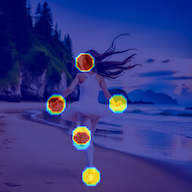
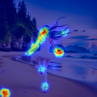
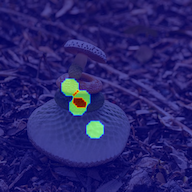
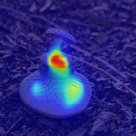
| Plausibility | Aesthetics | Text-image Alignment | Overall | |||||
| PLCC | SRCC | PLCC | SRCC | PLCC | SRCC | PLCC | SRCC | |
| ResNet-50 | 0.495 | 0.487 | 0.370 | 0.363 | 0.108 | 0.119 | 0.337 | 0.308 |
| PickScore (off-the-shelf) | 0.0098 | 0.0280 | 0.131 | 0.140 | 0.346 | 0.340 | 0.202 | 0.226 |
| CLIP (off-the-shelf) | 0.185 | 0.130 | ||||||
| CLIP (fine-tuned) | 0.390 | 0.378 | 0.357 | 0.360 | 0.398 | 0.390 | 0.353 | 0.352 |
| Our Model (multi-head) | 0.666 | 0.654 | 0.605 | 0.591 | 0.487 | 0.500 | 0.582 | 0.561 |
| Our Model (augmented prompt) | 0.693 | 0.681 | 0.600 | 0.589 | 0.474 | 0.496 | 0.580 | 0.562 |
| All data | |||||||
|---|---|---|---|---|---|---|---|
| MSE | MSE | CC | KLD | SIM | NSS | AUC-Judd | |
| ResNet-50 | 0.00996 | 0.00093 | 0.506 | 1.669 | 0.338 | 2.924 | 0.909 |
| Ours (multi-head) | 0.01216 | 0.00141 | 0.425 | 1.971 | 0.302 | 2.330 | 0.877 |
| Ours (augmented prompt) | 0.00920 | 0.00095 | 0.556 | 1.652 | 0.409 | 3.085 | 0.913 |
| All data | |||||||
|---|---|---|---|---|---|---|---|
| MSE | MSE | CC | KLD | SIM | NSS | AUC-Judd | |
| CLIP gradient | 0.00817 | 0.00551 | 0.015 | 3.844 | 0.041 | 0.143 | 0.643 |
| Our Model (multi-head) | 0.00303 | 0.00015 | 0.206 | 2.932 | 0.093 | 1.335 | 0.838 |
| Our Model (augmented prompt) | 0.00304 | 0.00006 | 0.212 | 2.933 | 0.106 | 1.411 | 0.841 |
| Precision | Recall | F1 Score | |
|---|---|---|---|
| Multi-head | 62.9 | 33.0 | 43.3 |
| Augmented prompt | 61.3 | 34.1 | 43.9 |
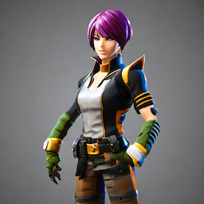
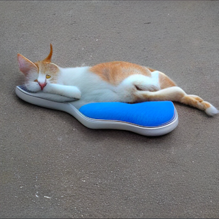
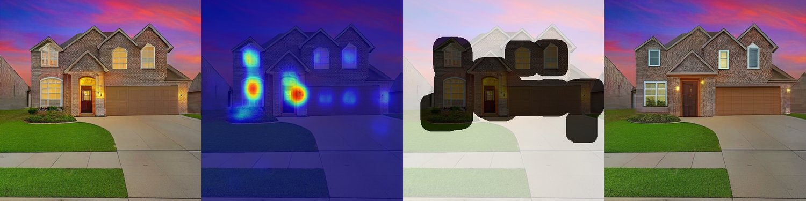
| Preference | |||||
|---|---|---|---|---|---|
| Percentage | 21.5% | 30.33% | 31.33% | 12.67% | 4.17% |
Our model is trained on the 16K RichHF-18K training samples, and the hyperparameters were tuned using the model performance on the 1K RichHF-18K validation set. The hyperparameters setup can be found in supplementary material.
For score prediction tasks, we report the Pearson linear correlation coefficient (PLCC) and Spearman rank correlation coefficient (SRCC), which are typical evaluation metrics for score predictions [29]. For heatmap prediction tasks, a straightforward way to evaluate the results would be to borrow standard saliency heatmap evaluation metrics such as NSS/KLD [5]. However, these metrics cannot be applied directly in our case as all these metrics assume the ground truth heatmap is not empty; yet in our case, empty ground truth is possible (e.g., for artifact/implausibility heatmap, it means the image does not have any artifact/implausibility). As such, we report MSE on all samples and on those with empty ground truth, respectively, and report saliency heatmap evaluation metrics like NSS/KLD/AUC-Judd/SIM/CC [5] for the samples with non-empty ground truth. For the misaligned keyword sequence prediction, we adopt the token-level precision, recall, and F1-score. Specifically, the precision/recall/F1 scores are computed for the misaligned keywords over all the samples.
For comparison, we finetune two ResNet-50 models [18], with multiple fully connected layers and deconvolution heads to predict the scores and heatmaps, respectively. We also use the off-the-shelf PickScore model [31] to compute the PickScores and calculate the metrics w.r.t each of our four ground truth scores. We use the off-the-shelf CLIP model [40] as a baseline to compute the cosine similarity of the image and text embeddings and use it to calculate the text-image alignment metric, as the CLIP cosine similarity is designed to reflect the alignment between images and prompts. Besides, we also fine-tune a CLIP model to predict the four types of scores using our training dataset. For misalignment heatmap prediction, we use CLIP gradient [46] map as a baseline.
The experimental results of our model prediction on the four fine-grained scores, the implausibility heatmap, misalignment heatmap, and misalignment keyword sequence on our RichHF-18K test set are presented in Tab. 1, Tab. 2, Tab. 3, and Tab. 4 respectively.
In both Tab. 1 and Tab. 3, the two variants of our proposed model both significantly outperform ResNet-50 (or CLIP for text-image alignment score). Yet, in Tab. 2, the multi-head version of our model performs worse than ResNet-50, but our augmented prompt version outperforms ResNet-50. The main reason might be that in the multi-head version, without augmenting the prediction task in the prompt, the same prompt is used for all the seven prediction tasks, and hence the feature maps and text tokens will be the same for all tasks. It might not be easy to find a good tradeoff among these tasks, and hence the performance of some tasks such as artifact/implausibility heatmap became worse. However, after augmenting the prediction task into a prompt, the feature map and text token can be adapted to each particular task with better results. Additionally, we note that misalignment heatmap prediction generally has worse results than artifact/implausibility heatmap prediction, possibly because misalignment regions are less well-defined, and the annotations may therefore be noisier.
We show some example predictions from our model for implausibility heatmap (Fig. 5), where our model identifies the regions with artifact/implausibility, and for misalignment heatmap (Fig. 6), where our model identifies the objects that don’t correspond to the prompt. Fig. 7 shows some example images and their ground-truth and predicted scores. More examples are in the supplementary material.
In this section, we investigate whether the predicted rich human feedback (e.g., scores and heatmaps) can be used to improve image generation. To ensure that the gains from our RAHF model generalize across generative model families, we mainly use Muse [6] as our target model to improve, which is based on a masked transformer architecture and thus different from the Stable Diffusion model variants in our RichHF-18K dataset.
We first illustrate that finetuning with RAHF scores can improve Muse. First, we generate eight images for each of the prompts (the prompt set is created via PaLM 2 [11, 1] with some seed prompts) using the pre-trained Muse model. We predict RAHF scores for each image, and if the highest score for the images from each prompt is above a fixed threshold, it will be selected as part of our finetuning dataset. The Muse model is then finetuned with this dataset. This approach could be viewed as a simplified version of Direct Preference Optimization [15].
In Fig. 8 (a)-(b), we show one example of finetuning Muse with our predicted plausibility score (threshold=0.8). To quantify the gain from Muse finetuning, we used 100 new prompts to generate images, and asked 6 annotators to perform side-by-side comparisons (for plausibility) between two images from the original Muse and the fine-tuned Muse respectively. The annotators choose from five possible responses (image A is significantly/slightly better than image B, about the same, image B is slightly/significantly better than image A), without knowledge of which model is used to generate the image A/B. The results in Tab. 5 demonstrate that the finetuned Muse with RAHF plausibility scores possesses significantly fewer artifacts/implausibility than the original Muse.
Moreover, in Fig. 8 (c)-(d), we show an example of using the RAHF aesthetic score as Classifier Guidance to the Latent Diffusion model [42], similar to the approach in Bansal et al. [2], demonstrating that each of the fine-grained scores can improve different aspects of the generative model/results.
We demonstrate that our model’s predicted heatmaps and scores can be used to perform region inpainting to improve the quality of generated images. For each image, we first predict implausibility heatmaps, then create a mask by processing the heatmap (using thresholding and dilating). Muse inpainting [6] is applied within the masked region to generate new images that match the text prompt. Multiple images are generated, and the final image is chosen by the highest predicted plausibility score by our RAHF.
In Fig. 9, we show several inpainting results with our predicted implausibility heatmaps and plausibility scores. As shown, more plausible images with fewer artifacts are generated after inpainting. Again, this shows that our RAHF generalizes well to images from a generative model very different from the ones whose images are used to train RAHF. More details and examples can be found in the supplementary material.
In this work, we contributed RichHF-18K, the first rich human feedback dataset for image generation. We designed and trained a multimodal Transformer to predict the rich human feedback, and demonstrated some instances to improve image generation with our rich human feedback.
While some of our results are quite exciting and promising, there are several limitations to our work. First, the model performance on the misalignment heatmap is worse than that on the implausibility heatmaps, possibly due to the noise in the misalignment heatmap. It is somewhat ambiguous how to label some misalignment cases such as absent objects on the image. Improving the misalignment label quality is one of the future directions. Second, it would be helpful to collect more data on generative models beyond Pick-a-Pic (Stable Diffusion) and investigate their effect on the RAHF models. Moreover, while we present three promising ways to leverage our model to improve T2I generation, there is a myriad of other ways to utilize rich human feedback that can be explored, e.g., how to use the predicted heatmaps or scores as a reward signal to finetune generative models with reinforcement learning, and how to use the predicted heatmaps as a weighting map, or how to use the predicted misaligned sequences in learning from human feedback to help improve image generation, etc. We hope RichHF-18K and our initial models inspire quests to investigate these research directions in future work.
Supplementary Material
Our data collection has been approved by an Institutional Review Board.
Distorted human/animal bodies/faces
Distorted/combined faces and/or body parts (unless specified in the text caption)
Missing body parts (unless specified in the text caption)
Additional body parts (unless specified in the text caption)
Distorted objects (non human/animal)
Distorted objects (e.g., furniture, vehicles, buildings) (unless specified in the text caption)
Distorted/Nonsensical text
Text that is distorted, nonsensical, or misspelled (unless specified in the text caption)
Nonsensical Representations
Representations that are unrealistic/nonsensical (unless specified in the text caption), or difficult to understand
Excessive blurriness/lack of sharpness
The image contains excessive blurriness or quality that detracts from the overall image (focus on one part of the image is OK)
The image contains a lack of definition/sharpness that detracts from the overall image
Any other artifacts or implausibility not covered above
Since we require the annotators to mark the misaligned words in the text prompt, we differentiate this part from Sec. 8.1 by including a what-to-do under each definition.
Something is missing: a human/animal/object specified in the text caption is missing in the image
Click on that word of the human/animal/object in the text
Incorrect attributes: an attribute (e.g., color) of an object specified in the text is incorrect in the image
Click on that word of the attribute in the text and click on the region of the object on the image
Incorrect actions: an action specified in the text caption is not represented in the image
Click on that word of the action in the text and click on the region of the wrong actions on the image
Incorrect numbers: counts of humans/animals/objects in the image do not match those specified in the text
Click on the number in the text
Incorrect position: the spatial position of two entities in the image does not match that specified in the text
Click on the word of the position in the text
Other: any other inconsistency between text and image
Click on the word of the inconsistency in the text
To ensure the annotators understand the above definitions, we provide 4-10 examples for each definition of the annotation terms in the guideline. All of our annotators can read English and thus understand the text prompts. In some of the prompts, there are concepts or person names in the text prompts that are uncommon and may cause confusion to the annotators. Therefore, we instruct the annotators to do a quick search on the internet regarding any unfamiliar concepts in the text prompts and skip samples with confusing prompts full of strange concepts.
We designed a web UI to facilitate data collection with the following principles: 1) convenience for annotators to perform annotations, ideally within a short time for an image-text pair and, 2) allowing annotators to perform all annotations on the same UI, so that the fine-grained scores are based on the annotated regions and keywords. To this end, we created the interface as illustrated in Fig. 1. The main UI consists of an image displayed on the left and a panel on the right, where the text prompt is shown at the top of the panel. Annotators are asked to first click on the image to annotate the artifact/implausible regions and misalignment regions, and then select the misaligned keywords and the fine-grained scores on the right of the panel.
We created detailed annotation guidelines to instruct the annotators regarding the annotation steps, interactions with the web UI, examples of different types of implausibility, artifacts, and misalignment. All the annotators (27 in total) are trained with the annotation guidelines and calibrated, before they perform the annotation in order to reduce annotation discrepancy and improve quality. Our annotation took around 3,000 rater-hours in total. To improve the effectiveness of the collected dataset and control the time spent on annotation, we filter out any image-text pairs that have a text prompt with less than 3 words or more than 20 words. We also filter out non-English prompts or any prompts containing emoji.
Since the Pick-a-Pic v1 dataset contains some images and/or prompts that are inappropriate (e.g., containing nudity), we ask the annotators to mark these images with a special flag and skip the annotation. We filter out these inappropriate images and/or prompts during data post-processing. For this reason, the total number of images in our final training set is around 300 short of 16K.
The distribution of the attributes of the 16K training samples is shown in Fig. 10. We can see a relatively balanced distribution of the types of content in the generated images in our dataset.
We choose points over bounding boxes in our region annotation because we find that points are much faster to mark and can have a reasonable coverage over image regions with various shapes when we specify an effective radius for each point as discussed in the main paper.
As a limitation in our region/heatmap annotations, we notice there is an over-annotation issue in the artifacts/implausibility region annotation. Specifically, our annotators tend to annotate more human faces and hands on the images than necessary. One reason is that human faces and hands in the Pick-a-Pic dataset indeed have more artifacts/implausibility than other parts. Moreover, the annotators, as humans, may naturally pay more attention to human faces and hands, resulting in over-annotation of these parts. Nevertheless, the over-annotation issue is minor in our final dataset, as we strive to provide feedback to the annotators frequently to make them less nitpicking about human faces and hands.
Another limitation is the diversity of the subjects in the prompts/images. The Pick-a-Pic dataset (and many others) is predominantly full of human, dog, and cat subjects. For this reason, it is challenging to find a very diverse dataset for annotation. We strive to make the subjects more diverse by using balanced categories as indicated by the PaLI attributes (as in Fig. 10). We didn’t choose more fine-grained categories for PaLI to test as there would be an endless list of subjects we could consider. Therefore, we leave the goal of annotating more diverse images/prompts in future works.
The main model components consist of a ViT B16 encoder for image encoding, a T5 base encoder for mixing image and text tokens, and three predictors for score, heatmap, and text misalignment, respectively. The ViT B16 encoder uses a 16x16 patch size, 12 layers with 12 heads with a hidden dimension of 768, wherein the MLP has a hidden dimension of 3072. The T5 base encoder uses 12 layers with 12 heads with a hidden dimension of 768, wherein the MLP has a hidden dimension of 2048. The score predictor consists of four convolutional layers with layer norm and ReLU activation, and the filter size, kernel size, and strides are , respectively. Three dense layers of output sizes 2048, 1024, and 1, respectively, are used to generate a scalar with ReLU activation for the first two layers and sigmoid for the last. The heatmap predictor consists of two convolution layers with filter size, kernel size, and stride as , respectively. It then uses four de-convolution layers to up-sample to the required output size, with the filter size, kernel size, and stride as , respectively. Each de-convolution layer is with two read-out convolution layers of kernel size 3 and stride 1. Layer norm and ReLU are used for each layer. In the end, two read-out convolution layers and a final sigmoid activation are used to generate the heatmap prediction. The text predictor is implemented using a T5 base decoder with 12 layers of 12 heads, MLP dimension 2048, and hidden dimension 768. The output token length is 64.
We train the model on the datasets with a batch size of 256 for 20K iterations. We utilize the AdamW optimizer with a base learning rate of 0.015. We linearly increase the learning rate from 0 to the base learning rate in the first 2000 iterations, and then decrease the learning rate with a reciprocal square root scheduler w.r.t the number of iterations. We trained the model using 64 Google Cloud TPU v3 chips.
For each image, we randomly crop it by sampling a bounding box with 80%-100% width and 80%-100% height. The cropping is applied by 50% chance and otherwise the original image is used. Note that we also crop the corresponding part of the implausibility heatmap and misalignment heatmap to match the cropped image. We then create an augmented version of the image by applying several random augmentations including random brightness (max delta 0.05), random contrast (random contrast factor between 0.8 and 1), random hue (max delta 0.025), random saturation (random saturation factor between 0.8 and 1) and random jpeg noise (jpeg quality between 70 and 100). By 10% chance the augmented version is used instead of the original image. We convert the image to grayscale by 10% probability as the final image.
To generate the training prompt set, we provide five hand-crafted seed prompts as examples and then ask PaLM 2 [1] to generate similar textual prompts. We include additional instructions that specify the prompt length and the object category. We then explain why we do not use existing benchmark datasets for training. Theoretically, we can get an infinite number of prompts using the prompt synthesis technique we proposed above. Existing datasets are 1) relatively small (e.g., TIFA [24] has 4k prompts, Davidsonian Scene Graph (DSG) [10] has only 1k prompts), or 2) containing prompts that are simple and not diverse enough, for example, only measuring single objects in Parti benchmark [59]. This motivates us to synthesize a larger set of diverse prompts for training purposes. For the 100 prompts for our human evaluation, they are sampled from the existing benchmark: TIFA [24]. We only did our evaluation on 100 prompts due to the high cost of the human annotation.
Fig. 11 provides more examples of artifacts/implausibility heatmaps. We can see that our RAHF model can more accurately locate the positions of artifacts/implausibility on various subjects such as human hands, animals, vehicles, and concept arts.
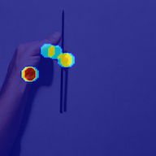
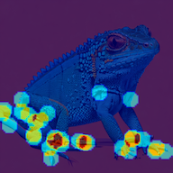
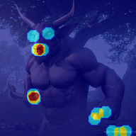
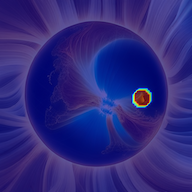
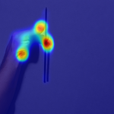
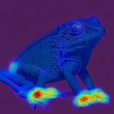
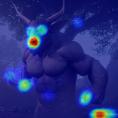
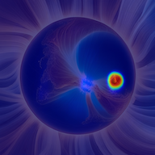
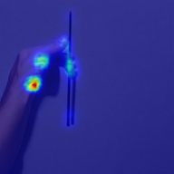
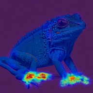
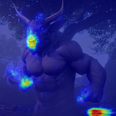
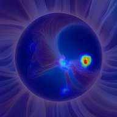
Fig. 12 provides more examples of misalignment heatmaps. We can see that our RAHF model can more accurately locate the positions of misalignment on various subjects such as animals, objects, and different outdoor scenes. For example, our model can identify the subtle difference between the real handlebar of a Segway and the one depicted in the image.
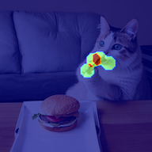
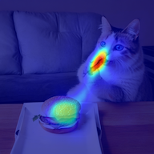
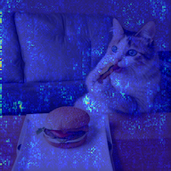
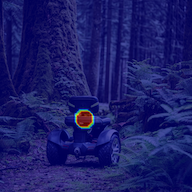
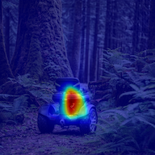
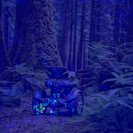
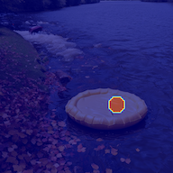
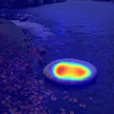
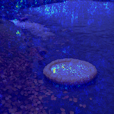
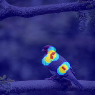
Image GT Our model CLIP gradient
Fig. 13 provides more examples of score predictions, where our RAHF model predicts scores that are quite close to the ground truth score from human evaluation.
Fig. 14 provides examples for the misaligned keywords prediction, which shows that our RAHF model can predict the majority of the misaligned keywords marked by human annotators.
Fig. 15 provides more examples of the comparison before and after finetuning Muse with examples selected based on the predicted scores by our RAHF model and examples of using RAHF model predicted overall score as Classifier Guidance. We can see enhanced image quality of the generation from the finetuned Muse model and the Latent Diffusion model, which highlights the potential of improving T2I generation with our reward model.
Fig. 16 provides more examples of Muse inpainting with the predicted masks (converted from heatmaps) by our RAHF model, where the inpainted regions are significantly improved in plausibility.
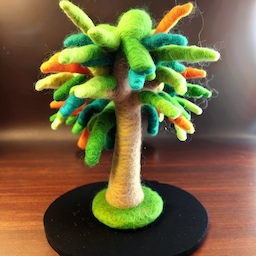
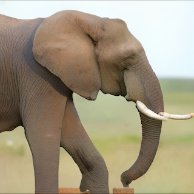
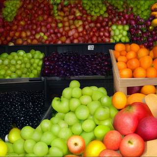
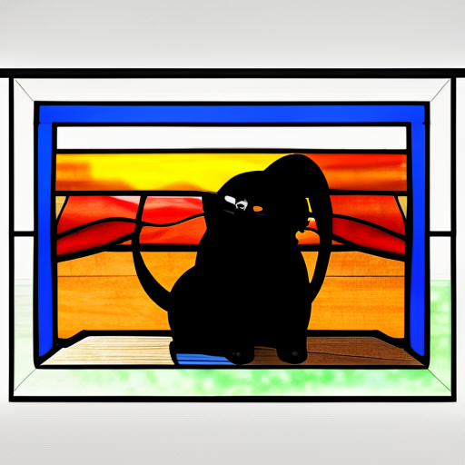
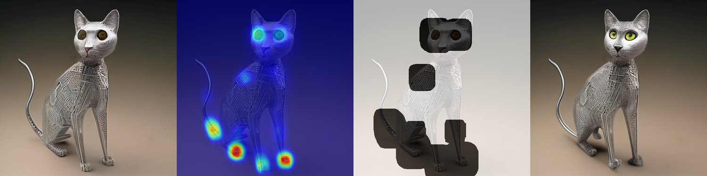
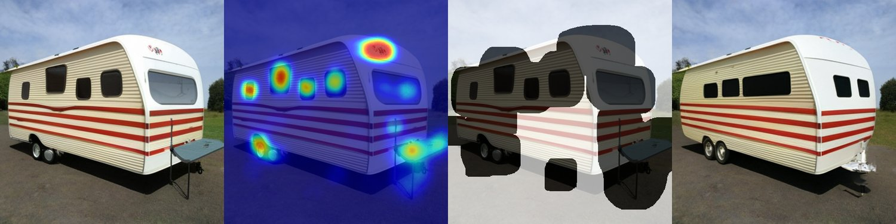